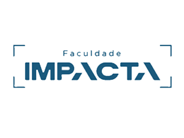

|  |
Faculdade Impacta de TecnologiaA TECNOLOGIA MUDA O SEU FUTURO |
Considerada uma das melhores faculdades com foco em tecnologia do País, a Faculdade Impacta oferece cursos de Graduação, Pós-Graduação e MBA e cursos técnicos. Conheça quais são as áreas de conhecimento que a Impacta aborda e saiba um pouco mais sobre cada curso:
| Cursos | Nível | Semestres |
|---|---|---|
| Análise e Desenvolvimento de Sistemas | Tecnólogo | 4 |
| Sistemas da Informação | Bacharelado | 8 |
| Banco de Dados | Tecnólogo | 4 |
| Informática Industrial | Técnico | 3 |
A Faculdade Impacta é altamente reconhecida por sua atuação no mercado da educação, o que comprova o compromisso da Instituição com o ensino de qualidade e a dedicação do Grupo Impacta em transformar a sociedade através da tecnologia. Desta maneira, ao longo dos anos a Faculdade Impacta tem recebido prêmios e reconhecimentos que são resultados do trabalho contínuo de professores e funcionários e da determinação de seus alunos.
As salas de aula da Faculdade Impacta são equipadas com lousas eletrônicas, que capturam todos os pontos das aulas presenciais, como voz, escrita dinâmica, vídeos e navegação do professor. Todo o conteúdo é gravado e disponibilizado em uma sala de ensino virtual para que o aluno assista quando e onde quiser, de qualquer plataforma digital
“Comprei meu multímetro lá, pessoal atencioso e competente, fui muito bem atendido, gostei da
variedade.”
- José da Silva
“Como não sou aluna, não avaliarei os cursos e sim o restaurante que fica dentro. Food'n Cup
excelente. Comida muito boa a preços ótimos e atendimento da Márcia e Levi de primeira.
Recomendo.”
- Jessica Joana
11 3254-8300 - Impacta 2018 - Todos os direitos reservados.